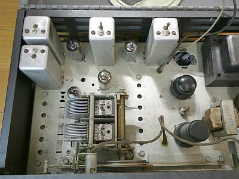
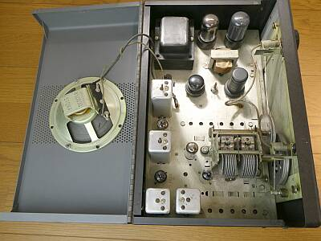
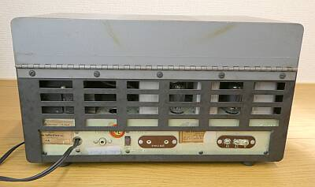
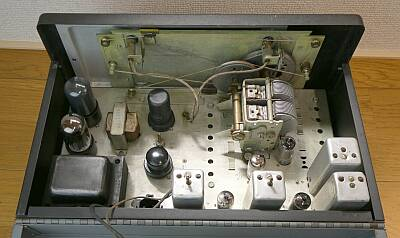
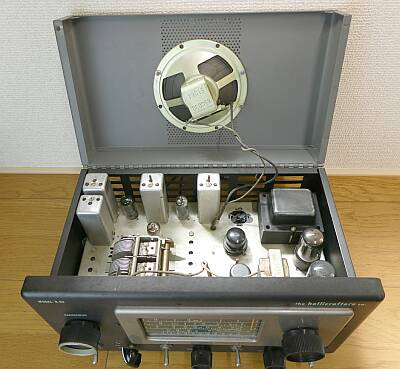
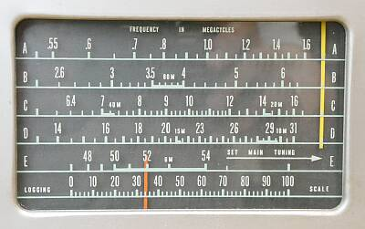
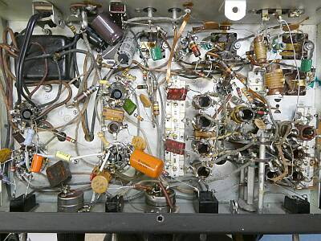

 |
S-５３の特徴というか、本機を確認できる機構部品
このでかい２０７５KHｚのIFT群
ミキサーのプレートには、集中IF
これこそS-５３です
S-５３Aでは、小型のＩＦＴ（４５５ＫＨｚ）に変更されています
集中ＩＦもありません
ブロック型電解コンデンサは、劣化のためチューブラ型のものに交換されています |
 |
上蓋がこのように開く構造になっています
ＩＦＴ下側の調整以外、すべてこの状態で調整できます
実際、ケースに収めないと周囲のノイズを拾ってＳ／Ｎが悪化します
Ｓ-３８も同様ですし、通信用受信機 ＦＲDX４００でも同じでした
シビアな調整をするには、ケースに収めた状態で調整できることは、大きなメリットです |
 |
リアパネルです
向かって右から左へ
ANT端子
Phone出力
Phone ― スピーカー 切替スイッチ
Phone入力 レコードを聞くことができます
ACケーブル
|
 |
リアパネル側からシャーシ上面を写したもの
ＲＦ段はＭＴ管、検波以降はＧＴ管の組み合わせです
ＲＦ段には、当時最新のＭＴ管を採用、です
５０ＭＨｚ帯までカバーの必要性から、ミキサー管（６ＢＡ６）とは別に、発振管（６Ｃ４）を採用したものと想像されます |
 |
このように簡単に上蓋が開きます
スピーカーが天板に取り付けられています
シャーシ―との接触不良問題を生じさせないよう、ケースの左右にシャーシとの接触を確実にするアースベロが用意されています
そのためケースの組付けには手がかかります（アースベロがシャーシに引っかかることを避ける作業が必要になる）
が、静かな受信フィーリングに貢献しているものと思います |
本機のダイヤル・スケールです

黄カーソル：メインＶＣ
赤カーソル：スプレッドＶＣ |
横行ダイヤルが流行りだした頃の製品です
今の状態は、５２MHｚ付近を受信中です
５０MHｚ帯の受信は、メインＶＣは抜ききった位置で、スプレッドダイヤルで選局するというナイスなアイディアというか、現実的な扱いです
５０ＭＨｚ帯とスプレッドダイヤルのスケールが上下の位置関係にある理由が分かります
メインダイヤルカーソルは、Ｄバンドまで（黄カーソル） この時、スプレッドダイヤルは１００の位置にセットし、０の方向に選局です（赤カーソル）
Ｅバンドは、メインＶＣは抜ききった位置で、スプレッドＶＣが直接カバーします |
 |
トランス右のチューブラ型電解コンデンサ群は、ブロック型電解コンデンサ代替のものです（３個で対応）
シャーシ下の様子
トランスの右下のＬは、ＢＦＯ発振コイル
中央のトリマ群、オシレータ用
右端のトリマ群は、アンテナ入力用 |
|
本機のIFは、２０７５KHｚです
アンテナ入力にはトラップフィルタが挿入されているなど、ＩＦ周波数近辺のすっぽ抜け対策が取られています
が、発売３年後には、ＩＦを４５５ＫＨｚに下げたＳ-５３Ａという次期モデルを発売しています
よほど２ＭＨｚ台のすっぽ抜けが問題になったのか、IＦ帯域（選択度）が問題になったのか、あるいはコストの問題なのか定かではありません
イメージ混信を考えれば、一発で４５５ＫＨｚへの変換はどう？って思いますね
それ以上にメリットがあるとすれば、選択度の向上かな、です（後述） |
|